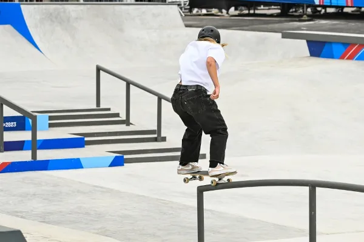
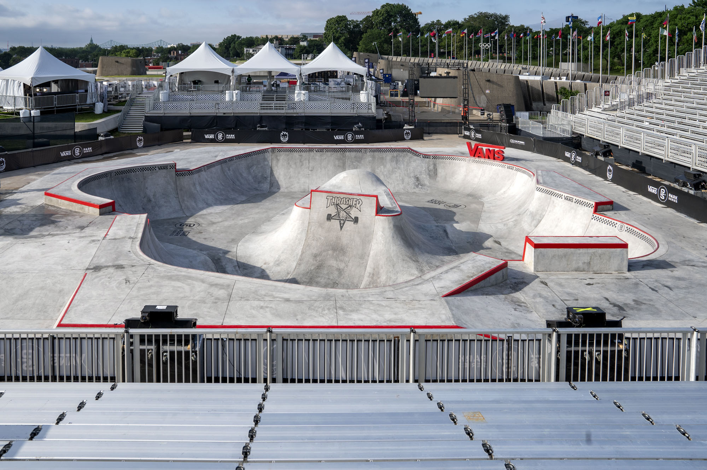
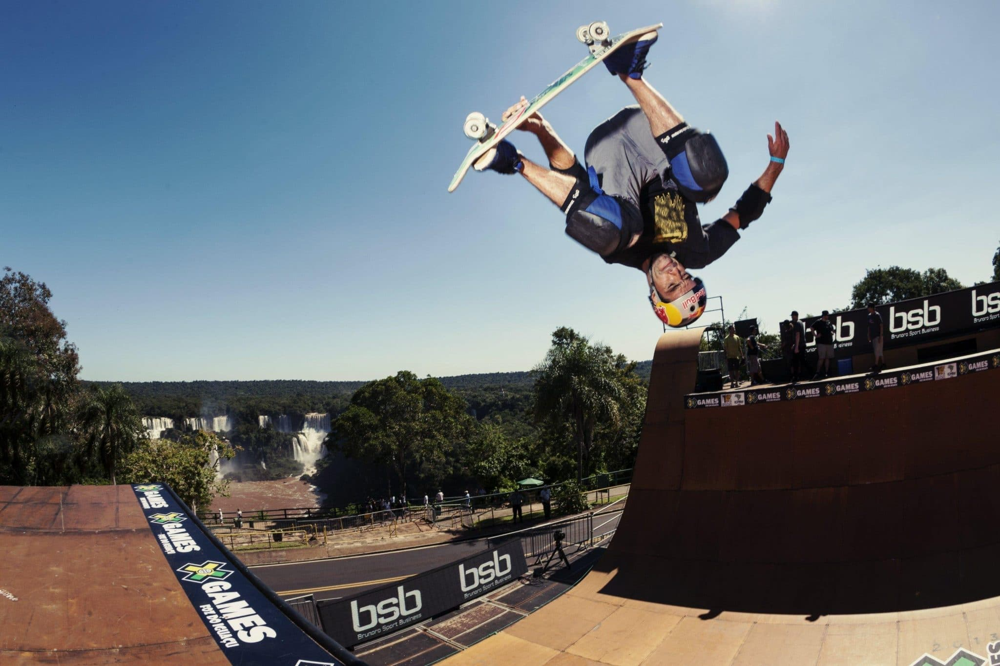
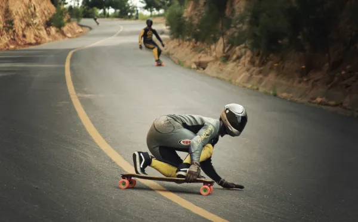

Modalidades do skate

Street
O skate street é uma modalidade popular que envolve manobras realizadas em ambientes urbanos, usando
obstáculos como corrimãos e escadas. Focado na criatividade e técnica, o estilo reflete influências da cultura
hip-hop e punk. As competições de skate street são vibrantes e destacam a individualidade dos skatistas. A
modalidade ganhou mais visibilidade ao ser incluída nas Olimpíadas.

Park
O skate park é uma modalidade que envolve manobras em rampas e bowls projetados para o skate. Focado na
fluidez, permite manobras como grinds e airs em transições variadas. As competições são emocionantes e
destacam a habilidade e criatividade dos skatistas. A modalidade também ganhou visibilidade nas Olimpíadas.

Vertical
O skate vertical é uma modalidade que se concentra em manobras realizadas em rampas verticais, como
half-pipes e vert ramps. Os skatistas usam a altura e a inclinação das rampas para executar aéreos, spins e
grinds. Essa modalidade exige grande técnica e controle, permitindo performances acrobáticas impressionantes.
As competições são dinâmicas e atraem skatistas de alto nível, celebrando a habilidade e o estilo individual.
O skate vertical também teve destaque nas Olimpíadas, ampliando sua visibilidade.

Downhil
O downhill é uma modalidade de skate que envolve descer colinas e encostas em alta velocidade. Os skatistas
utilizam pranchas longas, conhecidas como longboards, para maior estabilidade e controle. O foco está em
velocidade, manobras e técnicas de freio, como slides, para controlar a descida. O downhill é emocionante e
exige habilidade, coragem e um bom conhecimento do percurso. As competições são intensas, atraindo skatistas
de todo o mundo e promovendo um forte senso de comunidade entre os praticantes.